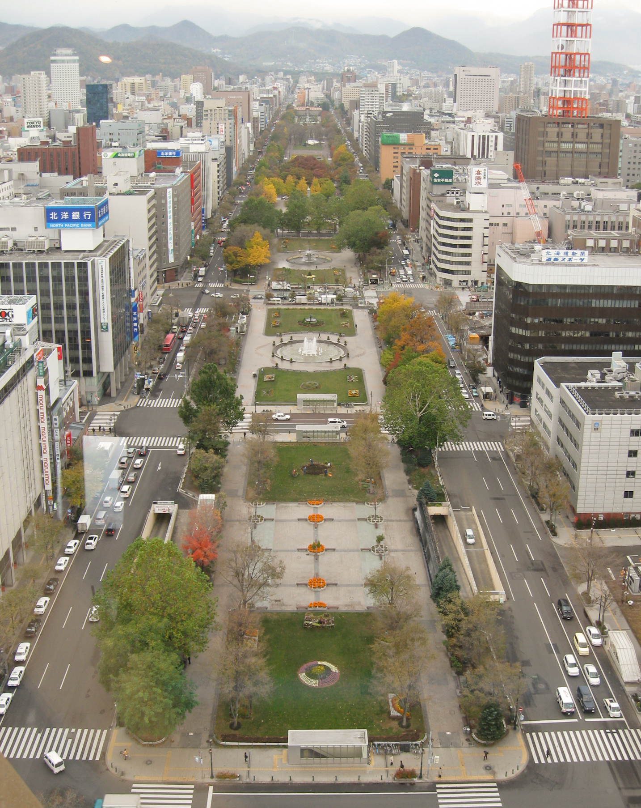

Sapporo, Otaru and Furano
A six-day family route with one Sapporo base, a low-friction Otaru day, and a protected Furano–Biei excursion.

One base, two deliberate day trips
This draft is designed for two adults and one or two school-age children who want Hokkaido variety without a second hotel move.
Sapporo base; Otaru by rail as a middle-day outing; Furano and Biei only if a full-day transport plan is confirmed.
One anchor per day, a protected return window, and no countryside transfer on arrival or departure day.
Check dates, rail/tour/car availability, weather, attraction hours, access and cancellation terms before booking.
Planning boundary: the booking hub indicates intent only; opening a provider link does not prove a booking occurred.
Route spine
Stay in Sapporo for five nights. Use the city for arrival recovery and the final buffer, Otaru for a compact harbour-and-canal day, and Furano–Biei as the only fragile excursion. If the countryside transport cannot be confirmed for the dates, keep the plan in Sapporo rather than forcing a long connection.
Day 1 — Arrive softly in Sapporo
Use the airport-to-Sapporo transfer as the day’s only major movement. After check-in, walk the Odori Park–Tanukikoji corridor for an easy first orientation and keep dinner close to the base.
Fallback: if arrival is late or baggage is slow, skip the walk and protect sleep; do not add a fixed-ticket activity.
Day 2 — Sapporo’s central food-and-park loop
Sequence Nijo Market in the morning, a midday rest near Odori Park, then the Sapporo TV Tower or a short Susukino food-area visit in the late afternoon. Keep the route walkable around one central base.
Fallback: in heavy rain or low energy, make the market the only anchor and move the tower decision to the final buffer day.
Day 3 — Otaru’s canal district without a rushed return
Take the checked morning rail connection from Sapporo to Otaru, walk the Sakaimachi shopping street toward the canal, and use the afternoon for a single glasswork or music-box stop before returning before the evening peak.
Fallback: if weather turns, shorten the canal walk and use one indoor Sakaimachi stop; confirm rail times and venue hours live.
Day 4 — Furano and Biei as one protected excursion
Leave early on a pre-checked full-day transport option for Furano and Biei, using one seasonal landscape anchor plus the Blue Pond or a named Biei viewpoint rather than trying to cover the whole region. Return to Sapporo with a hard evening buffer.
Fallback: if the transport, road or weather check fails, replace this with the Sapporo Beer Museum area and a slow afternoon; do not invent a same-day rail chain.
Day 5 — Family-choice day in Sapporo
Choose one deliberate anchor: Maruyama Park and Hokkaido Shrine for an outdoor reset, or the Sapporo Science Center for an indoor option. Keep the afternoon open for a shared meal and packing rather than adding another district.
Fallback: use the indoor option for heat, rain or fatigue; check accessibility and current session requirements before committing.
Day 6 — Buffer, departure and what must be confirmed
Keep the morning near the Sapporo base, then allow the checked airport transfer window. If the departure is late, use one short Odori Park revisit rather than crossing the city for a final attraction.
Fallback: if the flight time changes, remove the optional walk first; preserve the airport buffer and baggage plan.
Planning notes
Dates, rail schedules, tour or rental-car availability, seasonal landscapes, attraction hours, access, weather, baggage rules, prices and cancellation terms require live confirmation at decision time. Alfred can keep the plan editable and shareable; it does not guarantee live facts or a booking.
Build the full plan in Alfred
Generate, validate and edit the complete itinerary in the Alfred app.
Plan a trip